Eğitim Bilgileri
Üniversite
Sakarya Üniversitesi - Bilgisayar Mühendisliği
Lise
Kazım Karabekir Anadolu Lisesi
Ahmet Rasim Anadolu Lisesi
Birhat Çelikok
Ben Birhat Çelikok. 18 Haziran 2003 tarihide Van'da doğdum. İlkokul, ortaokul ve lisenin bir kısmını Van'da okuduktan sonra İstanbul'a taşındım ve Lisenin yaklaşık iki senesini İstanbulda okudum. Şuan İstanbul'da yaşamaktayım. Film/dizi izlemek, kamp yapmak, futbol oynamak ve izlemek hobilerimin başında geliyor.
Sakarya Üniversitesi - Bilgisayar Mühendisliği
Kazım Karabekir Anadolu Lisesi
Ahmet Rasim Anadolu Lisesi
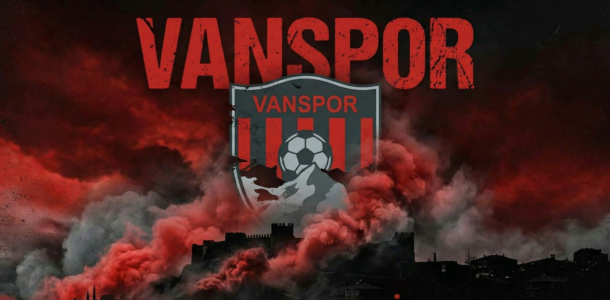
1982 yılında Van’da kurulmuş bir futbol kulübüdür. Kırmızı ve siyah renkleriyle tanınan takım, Türkiye futbol liglerinde farklı seviyelerde mücadele etmiştir.
Vanspor, kurulduğu ilk yıllarda alt liglerde yer aldıktan sonra 1990’lı yıllarda önemli bir yükseliş yakalamış ve Türkiye’nin en üst düzey liginde mücadele etmiştir. Bu dönem, kulübün ulusal ölçekte daha fazla tanınmasını sağlamıştır. İlerleyen yıllarda yeniden alt liglerde mücadele etmeye başlamıştır.
Kulüp, Türkiye futbol lig sisteminde farklı kademelerde yer almış ve çeşitli sezonlarda üst liglere çıkma hedefiyle mücadele etmiştir. Vanspor, özellikle rekabetin yüksek olduğu liglerde deneyim kazanmış takımlar arasında gösterilir.
Vanspor, iç saha karşılaşmalarını Van Atatürk Stadyumu’nda oynamaktadır. Stadyum, şehirde futbolun merkezlerinden biri olup maç günlerinde taraftarların bir araya geldiği önemli bir noktadır.
Kulüp, genç oyuncuların gelişimine katkı sağlamayı amaçlayan bir altyapı yapısına sahiptir. Bölgedeki futbol potansiyelinin değerlendirilmesi, kulübün uzun vadeli hedefleri arasında yer almaktadır.
Vanspor taraftarları, takımın maçlarını yakından takip eden ve özellikle iç saha karşılaşmalarında destek veren bir topluluktur. Taraftar grupları arasında “Gölkentliler” de yer almakta olup, bu grup maç atmosferine katkı sağlayan oluşumlardan biridir. Şehirle kurulan bağ, kulübün sosyal açıdan önemli bir konumda olmasını sağlar.
Vanspor FK, Van şehrini temsil eden önemli spor kulüplerinden biri olarak faaliyetlerini sürdürmektedir. Kulüp, geçmiş deneyimleri ve mevcut yapısıyla Türk futbolu içinde yer almaya devam etmektedir.
Van il merkezinin sınırları içerisinde olup, merkeze 5 km mesafede bulunmaktadır. Van ovasındaki doğu-batı doğrultusunda uzanan kaya kütlesi üzerine kurulmuştur. Kayalık, 20-120 m arasında değişen genişlikte, 1800 m uzunluğunda ve 100 m. yüksekliğinde doğal bir kütleye sahiptir. Güneyden sarp ve dik, kuzeyden meyilli topografik bir özellik göstermektedir. Üç bölümlü kalenin kuzeydeki çıkış yolu, batıdan doğuya doğru hafif rampa şeklindedir.
Tuşpa adıyla uzun süre Urartu Devleti'nin başkentliğini yapan kale, Urartu kralı I. Sarduri tarafından M.Ö. 840-825 tarihleri arasında kurulmuştur. Kalede Urartular'dan kalma Madır (Sardur) Burcu, Analı-Kız açık hava tapınağı, 1. Argişti, Kurucular, Menua ve II. Sarduri kaya mezarları, Bin Merdivenler ile ana kayaya oyulmuş sur duvar yatakları ve sur duvarları bulunmaktadır.
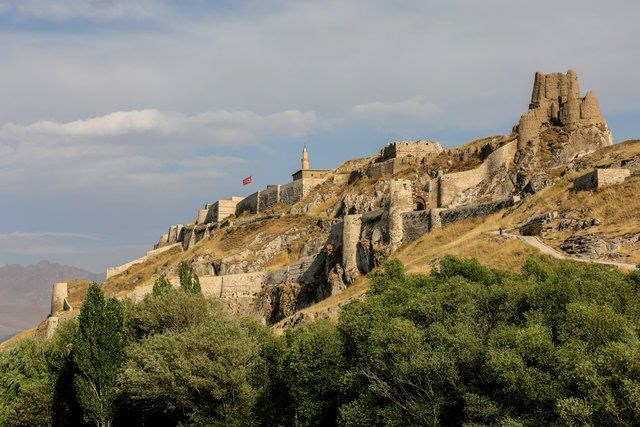
Kalede Urartular'dan sonra Osmanlı'ya kadar Pers yazıtı dışında herhangi bir kalıntı gelmemiştir. Doğu tarafindaki sur ve kuleler, kuzey batıya bakan kale giriş kapısı, tahkimat ve diger beden duvarları, Yukarı Kale, Süleyman Han Cami ve minaresi ile askeri amaçlı kerpiç ve taştan çeşitli yapılar, Osmanlı döneminden kalmadır. Tahkimatı sağlayan beden duvarları, burçlar ve kuleler moloz taş, kerpiç ile kesme taş malzeme ile yapılmıştır. Bu duvar ve tahkimatlar kuzeyden kalenin siluetini oluşturmaktadır. Osmanlı döneminde kale tamamen askeri amaçlı olarak kullanılmıştır. Asıl şehir kalenin güneyinde kurulmuştur. Burası da surlarla çevrilmiş. 1915’ten sonraki tahrip olmuş haliyle günümüze ulaşmıştır.
Van Gölü'nün güneydoğusunda yer alan Akdamar Adası, tarihi ve kültürel zenginlikleriyle dikkat çeken bir yerdir. Adanın en önemli yapısı, 10. yüzyılda inşa edilen Akdamar Kilisesi'dir. Ermeni mimarisinin güzel örneklerinden biri olan bu kilise, özellikle kabartmalarıyla ünlüdür. Kabartmalar, İncil'den sahneleri ve çeşitli figürleri betimlemektedir. Akdamar Adası, doğal güzellikleri ve tarihi dokusuyla ziyaretçilerine eşsiz bir deneyim sunmaktadır.
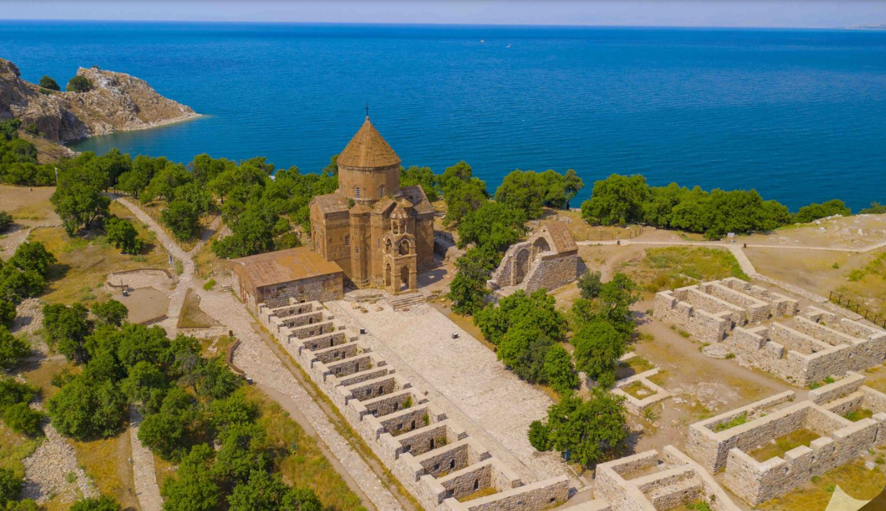
Kilise, Abbasilere bağlı olarak 908-1021 yılları arasında Van ve çevresinde hüküm süren Vaspurakan Krallığı’nın hükümdarı olan I. Hacik Gagik Ardzruni tarafından, 915-921 tarihleri arasında mimar Manuel’e, bir saray kompleksinin kilisesi olarak yaptırılmıştır. Vaspurakan Krallığı, Bizans İmparatoru II. Basil tarafından 1021-1022 yılında ortadan kaldırılmış ve son kral Senekerim 40.000 Ermeni ile birlikte Sivas’a, kısmen de Kayseri civarına göç ettirilmiştir. Vaspurakan Krallığı’nın ilhak edilmesiyle birlikte Akdamar Adası’ndaki Kutsal Haç Kilisesi bir saray kilisesi olmaktan çıkmış ve manastıra dönüştürülmüştür. 1021 yılında Vaspurakan Krallığı ortadan kalkınca, 1113 yılında ana yapıya çeşitli bölümler ilave edilerek, bu tarihten 1895 yılına kadar, bölgedeki Ermeni Patrikliğinin merkezi haline gelmiştir.
1918’de ada terk edilince, 19. yüzyılın sonlarına kadar üç yüz civarında keşişin ikamet ettiği manastırdaki yapıların tümü yıkılmış, kilise ve diğer bölümler ise harap olmuştur. Kültür ve Turizm Bakanlığı tarafından 2005 yılında restorasyon çalışmaları başlatılmış; ana yapının, kilisenin batısında yer alan jamatun bölümünün, güneydoğusu ve kuzeydoğusunda yer alan şapellerin restorasyon çalışmaları tamamlanmıştır. Kilisenin hemen güneyinde yer alan ana mekânı tamamlayıcı bölümleri ortaya çıkartmak amacıyla yürütülen bilimsel kazı çalışmaları ise 2006 yılında tamamlanmıştır. Yapılan kazı çalışmaları yaklaşık 3.435 metrekarelik bir alanı kapsamaktadır. Kazılarda kilisenin güneyinde yer alan avlu çevresine sıralanmış hücre odaları bölümü, servis bölümü, sarnıç ve ruhban okulu bölümü ortaya çıkarılmıştır. Akdamar Anıt Müzesi figürlü repertuarı oldukça zengindir. Ayrıca İncil ve Tevrat'tan alınmış çeşitli sahneler de bulunmaktadır. Yunus Peygamber’in denize atılması, Hz. Meryem ve kucağında Hz. İsa, Hz. Âdem ile Hz. Havva'nın cennetten çıkarılması, Hz. Davut ile Kral Golyat'ın mücadelesi, Samson Filistinli ikilisi, ateşte üç İbrani genci, aslan ininde Daniel sahneleri bunların başlıcalarıdır.
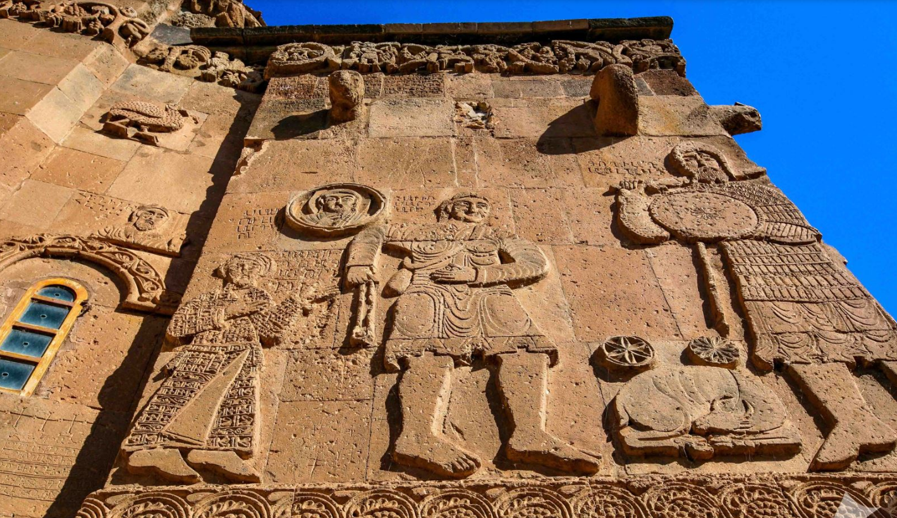
Batı cephede Kral Gagik'i kilise maketini sunarken gösteren bir sahne yer almaktadır. Dört yöndeki alınlıklarda İncil yazarları boydan tasvir edilmiştir. Bunlardan başka cephenin alt ve üst kesimlerinde asma sarmaşığından oluşan kuşaklar dolanmaktadır. Bu kuşakların içlerinde çeşitli dünyevi sahneler işlenmiştir. Av sahneleri, çeşitli hayvanlar, güreşçiler ve sarayla ilgili birçok sahneye yer verilmiştir. Ayrıca doğu cephenin tam ortasında asma sarmaşığı bordürünün içerisinde Abbasi Halifesi Muktedir, başı haleli ve bağdaş kurmuş olarak, bir elinde kadeh, diğer elinde üzüm tutar vaziyette tasvir edilmiştir. Dini ve dünyevi sahnelerden başka hayvan figürleri yönünden de bir çeşitlilik göze çarpmaktadır. Aralarda serbest biçimde asma sarmaşıkları içerisinde ve çatıların alt kesimlerinde bu zengin hayvan figürlerini görmek mümkündür.
Kilise, doğu-batı doğrultusunda dikdörtgen bir alana oturmaktadır. Ortadaki merkezi kubbe, batıdan iki serbest ayak ve doğudan apsis duvarına dayanan dört yöndeki kemerlerle taşınmaktadır. Doğudaki apsis beş köşeli olup iki yanında hücreler bulunmaktadır. Batı taraftaki haç kolunu örten kubbe ise kaburgalı olarak düzenlenmiştir. Merkezi kubbe dışa yüksek kasnaklı piramidal bir külah şeklinde yansımıştır. Batı ve kuzey cepheye açılmış iki kapıyla giriş sağlanmaktadır. Bunlardan batıdaki portal şeklinde bir düzenleme göstermektedir. Kesme taş malzeme kilisenin tamamında kullanılmıştır. Batı tarafına eklenen jamaton ise kare planlı ve dokuz bölümlü olarak düzenlenmiştir. Bölümlerin üzeri aynalı çapraz tonozlarla örtülmüştür. Batı cephesindeki dışa taşıntılı girişin üzeri çan kulesi olarak tertip edilmiştir. Alttaki kapı mukarnas kavsaralıdır. Bu kısımda da yer yer iki renkli düzgün kesme taş malzeme görülmektedir.
Kilisenin içini günümüzde büyük ölçüde bozulmuş olan freskler süslemektedir. Bu fresklerde genel olarak Hz. İsa ile ilgili konular işlenmiştir. Düzgün kesme taş malzemeyle inşa edilen yapıda, dış cepheleri süsleyen mimari plastik, kiliseye etkin bir görünüm kazandırmaktadır. Orta Asya Türk Sanatı etkilerini de üzerinde barındırması, kiliseye fark katmakta ve önemini arttırmaktadır.
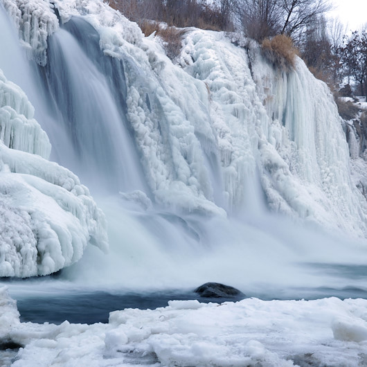
Muradiye Şelalesi, Muradiye ilçe sınırlarında yer alır ve Van merkezine 80 km uzaklıktadır. Adını Bağdat seferine çıkan Osmanlı Padişahı IV. Murat’tan almıştır. Tendürek Dağı’ndan beslenen Bend-i Mahi Çayı üzerindedir. Şelalenin yüksekliği 50 metredir. Muradiye Şelalesi, sadece görüntüsü ile değil çevresini güzelleştiren tabiatıyla da görülmeye değerdir. Her mevsim ayrı bir manzaraya bürünür ve bahar aylarında rengârenk çiçekler Muradiye Şelalesi’nin güzelliğine güzellik katar. Kış aylarında ise donan şelale suları buzdan kristallere dönüşür. Muradiye Şelalesi kamp yapmak için de ideal bir mekândır.
Van müzesinin ilk temelini, 1932 yılında yapılan bir depo binası oluşturmuştur. Bölgede çok sayıda bulunan Urartu çivi yazılı zafer stelleri ile Akkoyunlu ve Karakoyunlulara ait koç ve koyun şeklindeki mezar taşları, bulundukları yerlerden toplanarak söz konusu depo binasına nakledilmiştir.
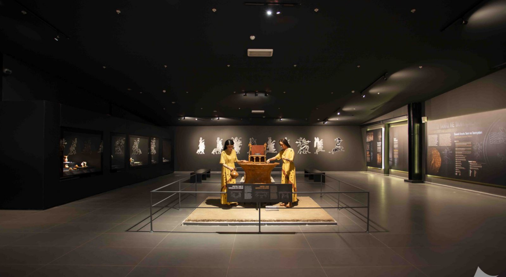
Depodaki kültür varlıklarının sayısı çoğalınca bu kez 1945 yılında Van Müze Memurluğu oluşturulmuştur. Satın alma ya da arkeolojik kazılar sonucunda ortaya çıkarılan eserlerin daha iyi korunup teşhir edilmesi içinse 1972 yılında Van Müze Müdürlüğü kurulmuştur.
Binanın yetersiz olması üzerine modern müzecilik anlayışı ile 13 bin metrekarelik bir alana yeni bir müze binası inşa edilmiş ve 2019 yılında ziyarete açılmıştır. Yeni müze binasında 23 sergi holü bulunmaktadır.
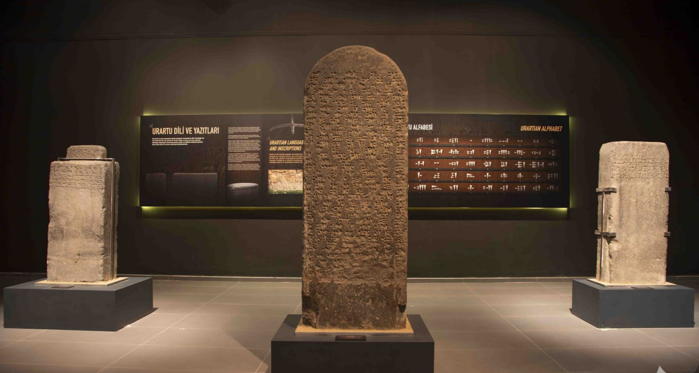
Müzede; Urartular, Roma, Bizans, Selçuklu, Akkoyunlu ve Karakoyunlu ile Osmanlı dönemlerine ait eserler, sikkeler ve Van halk kültürüne ışık tutan etnografik eserler ziyaretçilerini beklemektedir.
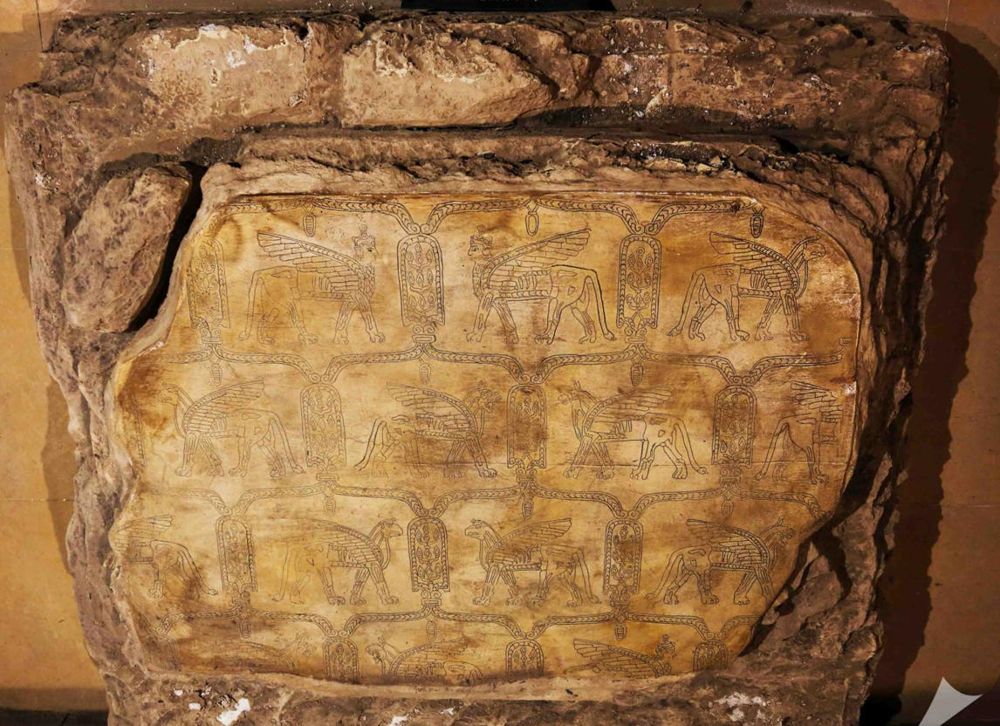
Eski Van Şehri’nde yer alan Hüsrev Paşa Külliyesi, Kanuni Sultan Süleyman'ın vezirlerinden Van Beylerbeyi Köse Hüsrev Mehmet Paşa tarafından 1567-68 yıllarında yaptırılmıştır. Mimar Sinan'ın eserleri arasında sayılan külliye; cami, medrese, kümbet, han, çifte hamam, imaret, sıbyan mektebi, çeşme, misafirhane, fırın ve dükkân bölümlerinden oluşmaktadır.
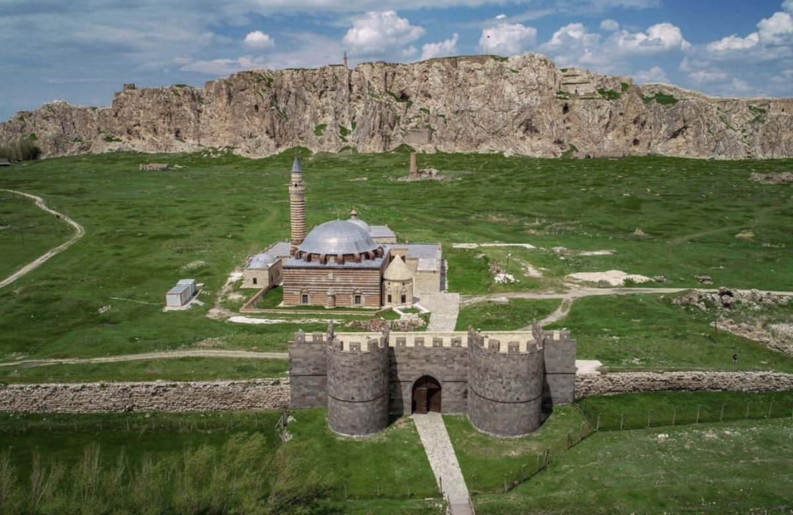
Hüsrev Paşa Camii, kare planlı olup üzeri kubbeyle örtülüdür. Yapının duvarlarında kesme taş, tromp ve kubbede tuğla malzeme kullanılmıştır. Kuzey cephede kemerli bir girinti içerisinde kapı açılmıştır. Kapının bulunduğu kuzey cephe ile diğer cepheler pencerelerle hareketlendirilmiştir. İç mekânda, duvarları belli bir yüksekliğe kadar çiniler kaplamaktadır. Cami giriş kapısı üzerindeki kemer alınlığında, tromplarda, mihrapta, iç duvar satıhlarında ve kemerlerde Barok motifli kalem işi süslemeler bulunmaktadır.
Minare ve dış cephelerde iki renkli kesme taş malzeme görülmektedir. Kuzeybatı köşede yükselen minare kare kaideli ve silindirik gövdelidir. İç mekânda mihrap kıble duvarının ortasına yerleştirilmiştir. Kalker taşından düzgün bir işçilik gösteren dikdörtgen görünüşlü mihrap, üç dilimli kemerle taçlandırmış beş kenarlı ve mukarnas kavsaralı nişe sahiptir. Mihrabın yüzeylerinde çeşitli geometrik süslemeler bulunmaktadır.
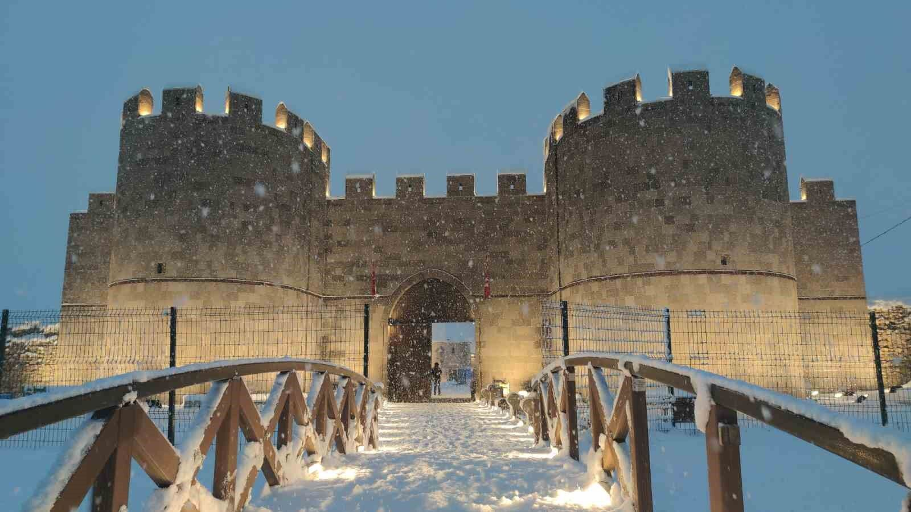
Hüsrev Paşa Külliyesi’nin merkezinde yer alan cami, medrese, imaret, kümbet, şadırvan ve avlu bölümlerinde 2007-2013 yılları arasında kapsamlı onarım çalışmaları yapılmıştır. Günümüzde külliyenin onarılan bu bölümleri aktif olarak dini, sosyal ve kültürel amaçlı faaliyetlerde kullanılmaktadır.
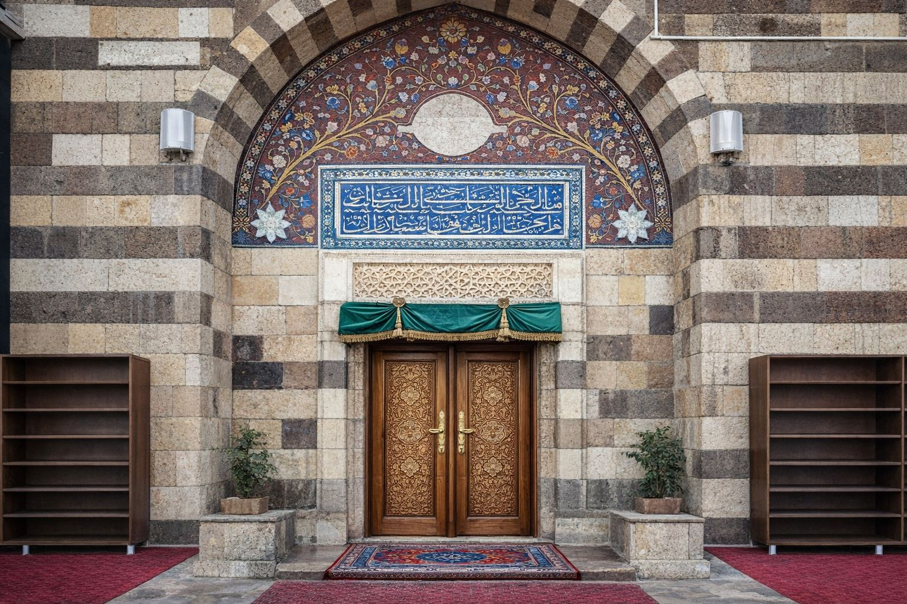